SkyAlert
The First Seismic Prevention App
PROBLEM
SkyAlert is an early earthquake warning system that warns users about earthquakes before they happen. Our team of four designers ( Monica, Warren, Bhushan , and I) were tasked with creating an onboarding flow that would inform users about SkyAlert’s existing mobile application and its features, technology, and subscription options!
Target Audience
SkyAlert started in Mexico City and has an established Spanish-speaking user base in Mexico. They wanted to move to California and target users in the state as earthquakes are also a concern in this geographic area.
SkyAlert started in Mexico City and has an established Spanish-speaking user base in Mexico. They wanted to move to California and target users in the state as earthquakes are also a concern in this geographic area.
RESEARCH
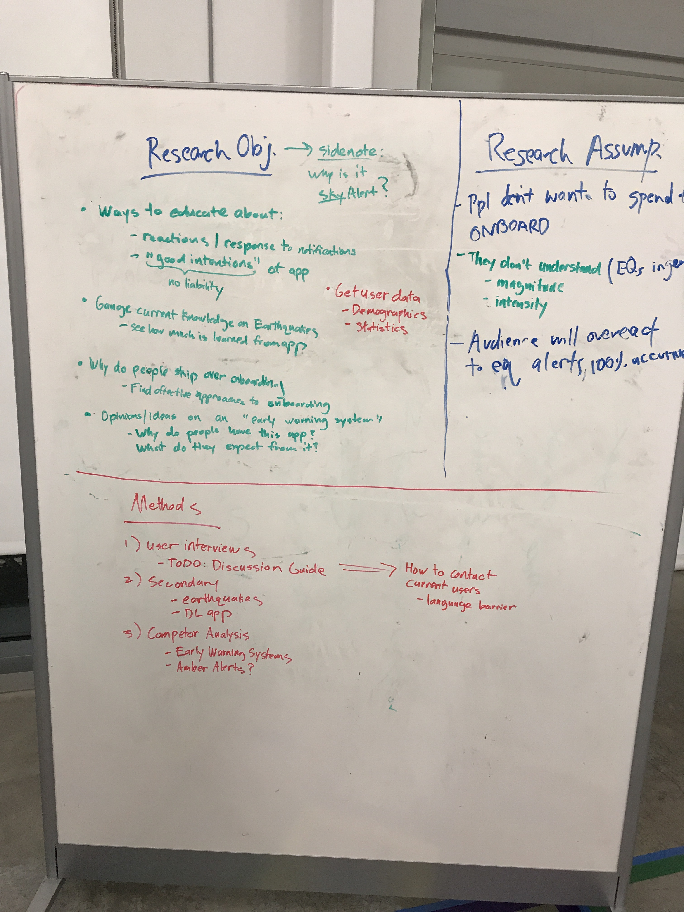
Survey
We sent out a survey through SkyAlert’s twitter and received 5,501 responses in one day! Since SkyAlert's users are primarily in Mexico, our survey was translated into Spanish. Here are a couple questions we asked in the Google form:
We sent out a survey through SkyAlert’s twitter and received 5,501 responses in one day! Since SkyAlert's users are primarily in Mexico, our survey was translated into Spanish. Here are a couple questions we asked in the Google form:
• Why do you have this application?
• How often do you open this app?
• In your own words, what is the purpose of SkyAlert?
• Have you watched the tutorial video on the app?
• On a scale from 1 – 5 (1 being the easiest, 5 being the hardest), rate the difficulty of using the app
• How often do you open this app?
• In your own words, what is the purpose of SkyAlert?
• Have you watched the tutorial video on the app?
- why or why not?
• Do you know how SkyAlert’s earthquake detection technology works?• On a scale from 1 – 5 (1 being the easiest, 5 being the hardest), rate the difficulty of using the app
Here’s the age breakdown of responses (in years)
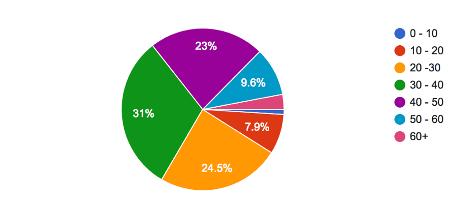
User Interviews
We also conducted user interviews with 6 Californian college students. Our discussion guide can be found here
We also conducted user interviews with 6 Californian college students. Our discussion guide can be found here
• Survey questions were related to their knowledge on earthquakes and early earthquake warning systems
• We also asked questions related to mobile onboarding
• We also asked questions related to mobile onboarding
User Testing
We conducted user testing with the latest version of the app on two Spanish-speaking users (the app was still only in Spanish). Our testing guide can be found here
Objectives:

We conducted user testing with the latest version of the app on two Spanish-speaking users (the app was still only in Spanish). Our testing guide can be found here
Objectives:
• Gauge effectiveness of the current onboarding system
• See how users currently navigate through the app
• Find existing pain points
• See how users currently navigate through the app
• Find existing pain points
RESEARCH SYNTHESIS AND INSIGHTS
We took our data and affinity mapped on Trello to organize everything we learned
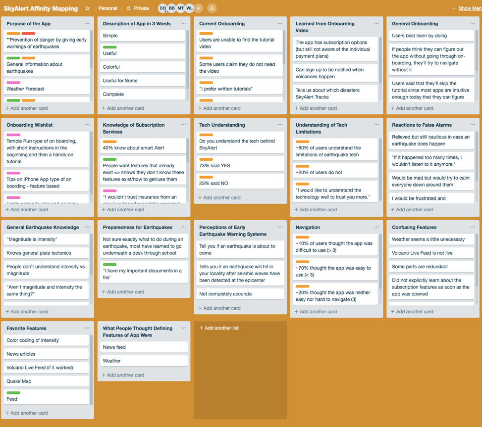
Here are a couple of takeaways from our research:
• Purpose
- User described as prevention, preparation, and education
- User have this app for security and prevention
- Based on contextual inquiry, purpose may not be clearly conveyed to new users, especially if they skip onboarding
• Onboarding - User have this app for security and prevention
- Based on contextual inquiry, purpose may not be clearly conveyed to new users, especially if they skip onboarding
50% of people have not seen the onboarding video because:
• Subscription Services
- Lack of time
- Written tutorials are preferred
- Not hands-on
- Users don't think it's necessary
- Written tutorials are preferred
- Not hands-on
- Users don't think it's necessary
- 40% of users know about SmartAlert
- The insurance subscription lacked credibility – “I wouldn’t trust insurance from an app”
- Many people don’t know about the subscription options
• General Earthquake Knowledge
- The insurance subscription lacked credibility – “I wouldn’t trust insurance from an app”
- Many people don’t know about the subscription options
- Users don’t understand the difference between magnitude and intensity
Personas
Using our data, we created 3 personas to focus our ideation phase
Using our data, we created 3 personas to focus our ideation phase
IDEATION
With our research in mind, we sketched out ideas we had for the onboarding process
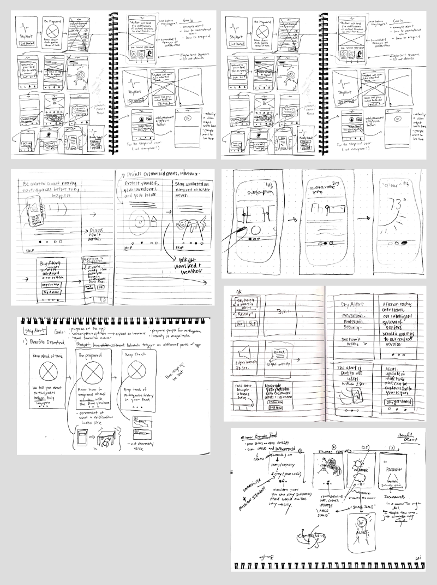
We also went out of scope and redesigned SkyAlert's subscription plan pages to make it easier to understand and compare options.
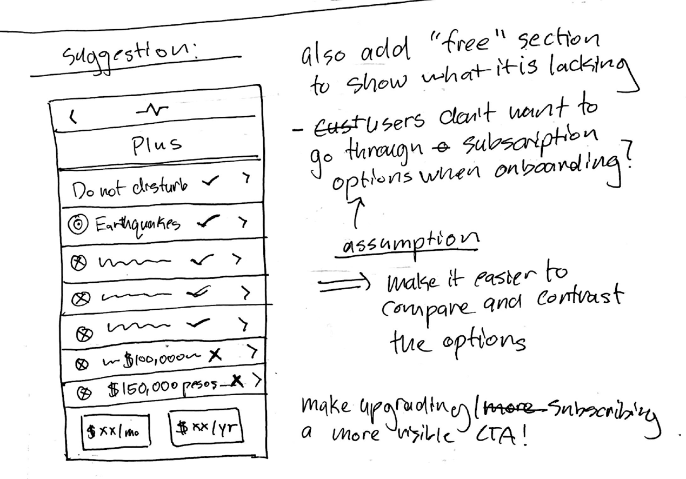
We consolidated our ideas into initial wireframes and included
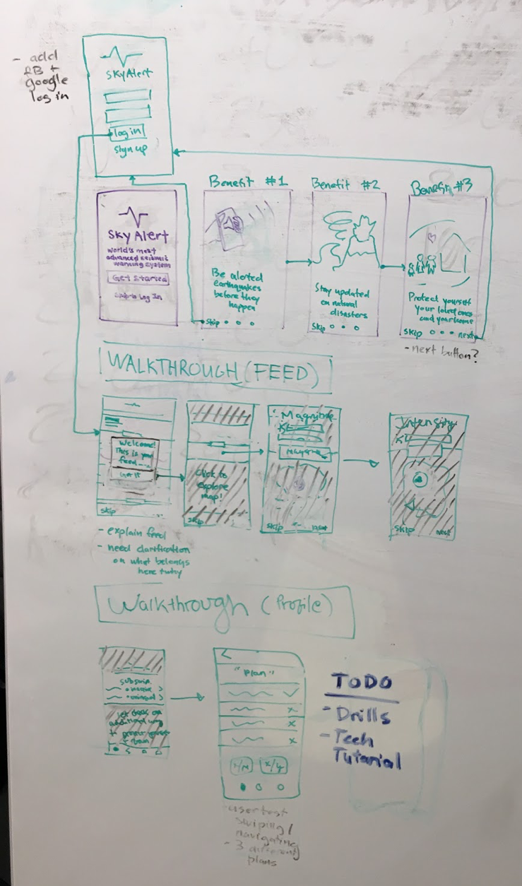
• Walkthroughs for feed and profile
• Benefits-oriented carousel
• Benefits-oriented carousel
MID-FI
We took our low-fi wireframes and digitized them on Figma
Benefits-oriented carousel (utilizing stock graphics for now)
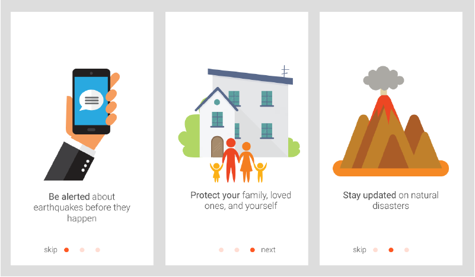
Feed walkthrough
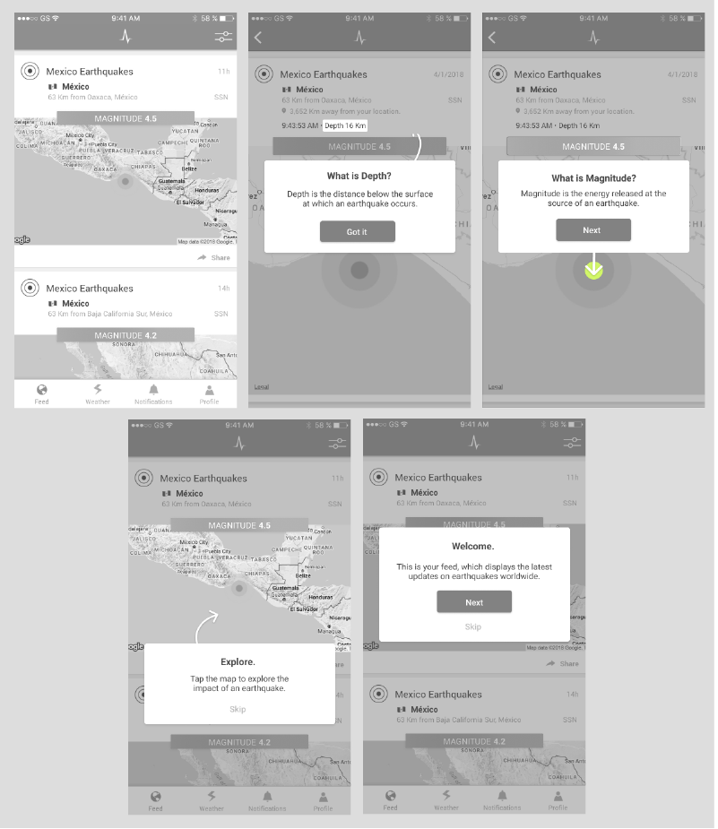
Profile / Intesity / Drills
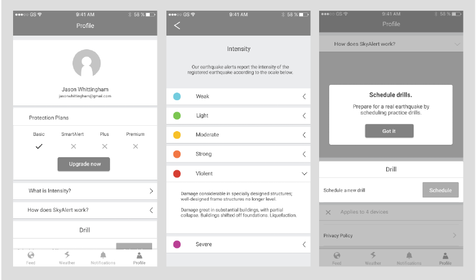
USER TESTING
We utilized our mid-fi mockups, UserTesting.com, and Invision to test out our ideas with 12 different people. UserTesting.com also let us pick age demographics, so we picked people from three age brackets (18 – 30, 30 – 50, 50 +). Here is our prompt:
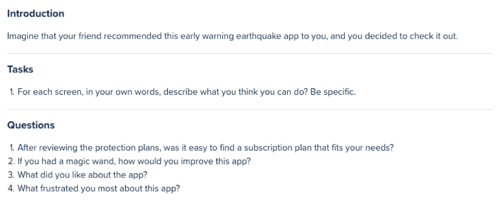
Here is some of the feedback from user testing that we iterated on:
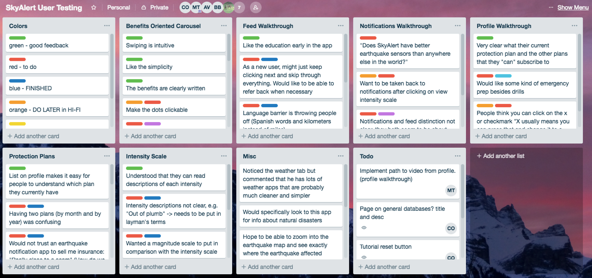
HI-FI
From there we made changes to our designs and created final screens!
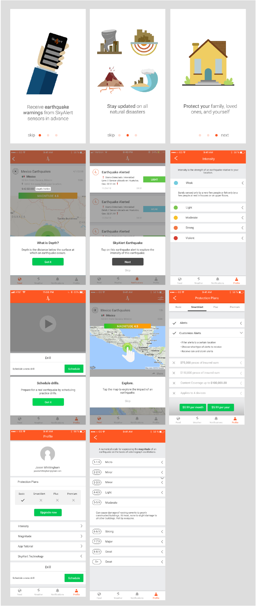
TAKEAWAYS
• If you see a place to improve, speak up!
- The scope we were given was to create an onboarding flow, but we thought we could also improve the subscriptions page! We had the bandwidth to do so and so we asked if we could also redesign it, and it ended up being my favorite part of the project!
• Find feedback frequently
- Our client did not know a lot about design, so we had to rely more on Berkeley Innovation's internal resources for feedback and critique. This meant showing officers and other project groups our design decision and answering their questions and hearing what they had to say!